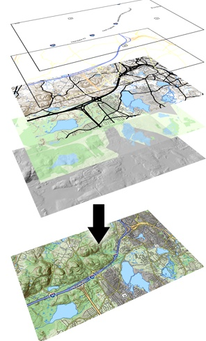
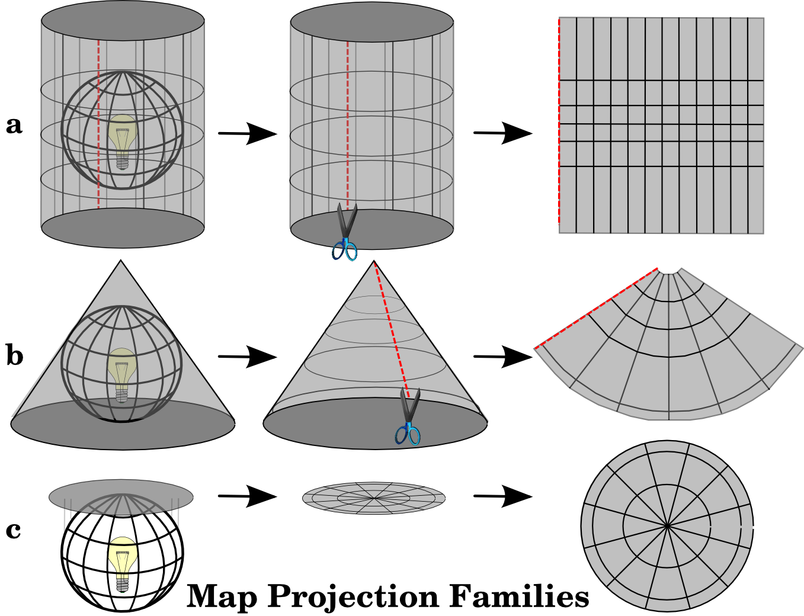
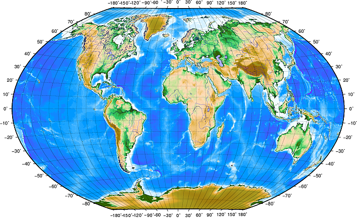

Crime Mapping and Spatial Analysis
Class 4: Geographic Information Systems
Geographic Information Systems
- Data
- Hardware
- Software
Data
- Vector
- Raster
Vector Data
Vector Data

Vector Data

Vector Data
- ESRI Shapefiles (.shp)
- GeoJSON (.json)
- Comma Separated Values (.csv)
- Keyhole Markup Language (.kml)
- Scalable Vector Graphics (.svg)
Vector Data
- Points
- Polylines
- Polygons
Vector Data: Scale

Vector Data: Scale

Vector Data
Eurostat Country ShapefilesRaster Data

Raster Data

Raster Data
- Spatial Resolution
- Spectral Resolution
Raster Data
- JPEG (.jpg)
- TIFF (.tif)
- GIF (.gif)
- PNG (.png)
Layers
Hardware
- memory (RAM)
- computation (processors)
- storage (hard drive)
- connectivity (Internet)
GIS Software
- read maps
- add spatial information
- spatial analysis
- print maps
- manage and transform CRS
- GUI
- layers
- legends
- servers
GIS Software
- QGIS
- ArcGIS
- GRASS
- Stata
- R
- Python
Map Projections
- cylindrical projections
- conical projections
- planar projections
Map Projections
Map Projections
- Angle conformity
- Distances
- Areas
Coordinate Reference Systems (CRS)
- Projected vs. Geographic
Projected CRS: UTM

Projected CRS: UTM
- Zone
- northing (y) and easting (x) values in meters
Geographic CRS: WGS 84
Geographic CRS: WGS 84
- CRS
- datum/reference ellipsoid
- the geoid
CRS issues
- defining and transforming
- measuring distance
- measuring area
- measuring angles
Map Production
- Communication is key
Map Production
- Title
- Border
- Legend
- North Arrow / Compass Rose
- Scale
- Acknowledgment
- Graticule
- Projection Name